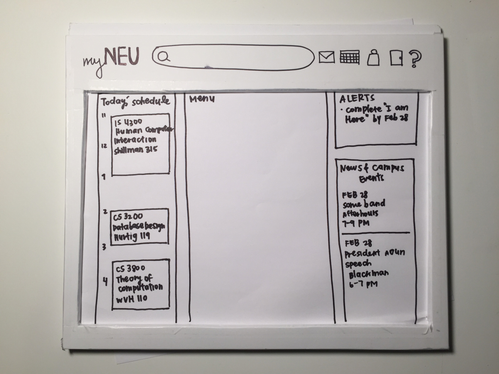

I'm Jaclyn, a third year student majoring in Computer Science and Design,
with a focus in Experience Design at Northeastern University in Boston.
I just finished my first co-op at Blueport Commerce as a Front Developer and UX Designer and am
lucky enough to be interning there as a UX Designer while in classes.
Outside of work and class, I spend my time as the President of the DIY Craft Club,
going to Zumba classes and baking.
If you want to learn more about me, you can take a look at my resume.
Hub Page Elements
UX Design project from my co-op and internship at Blueport Commerce
IN PROGRESS
Personal Portfolio
Web Design and Development personal project.
I started my personal website as a personal project to teach myself HTML, CSS and Bootstrap.
Through updating my site over the past couple of years, I've discovered a passion for design and a joy in
web design. I frequently play around with the site's design, whether I'm coding it or just sketching it
out in a notebook.
A Simple Guide
UX Design final project for Experience Design 1 Course.
IN PROGRESS
myNEU Redesign
UX and Web Design final project for a Human Computer Interaction course I took during Spring 2016.
Human Computer Interaction was one of the first introductions I had to UX Design. For the final and semester-long project, I worked with a group of two other students to redesign our university’s student portal. You can see our entire project and final report here, and below I’ve outlined some key aspects of our design process.
After figuring out the stakeholders in this project and creating personas, we then made Activity Design Scenarios based on metaphors and Task Models. You can see an example of one of them below:
Carol logs on to find her newly assigned random roommates for the next semester. Carol goes straight to Self-Service, and then Online-Housing. She is brought to an overwhelming page of way too many links. It would take her a long time to click on each link and check whether it has the information about her roommates. Since she knows what she wants to find, she decides to search on the the page by typing in “roommates”, “spring 2016”. A few seconds after she’s done that, a list of links are shown with a brief descriptions for each below each link. Under the first link, the description has “roommates” and “spring 2016” highlighted. Next to that, there are names that she is unfamiliar with. She selects that and it brings her to a page that has her roommates’ names and email addresses listed. She then contacts them via email to find out what she should bring to the apartment.
After this, we brainstormed with sketches for the UI and brought our ideas together to create a paper prototype, pictured below. We then conducted moderated usability testing with our paper prototype.

Based the data we collected, we made changes and created a digital prototype. This was then used for both heuristic and user evaluations. From here, we continued to iterate through the process and ended up with the final product below.